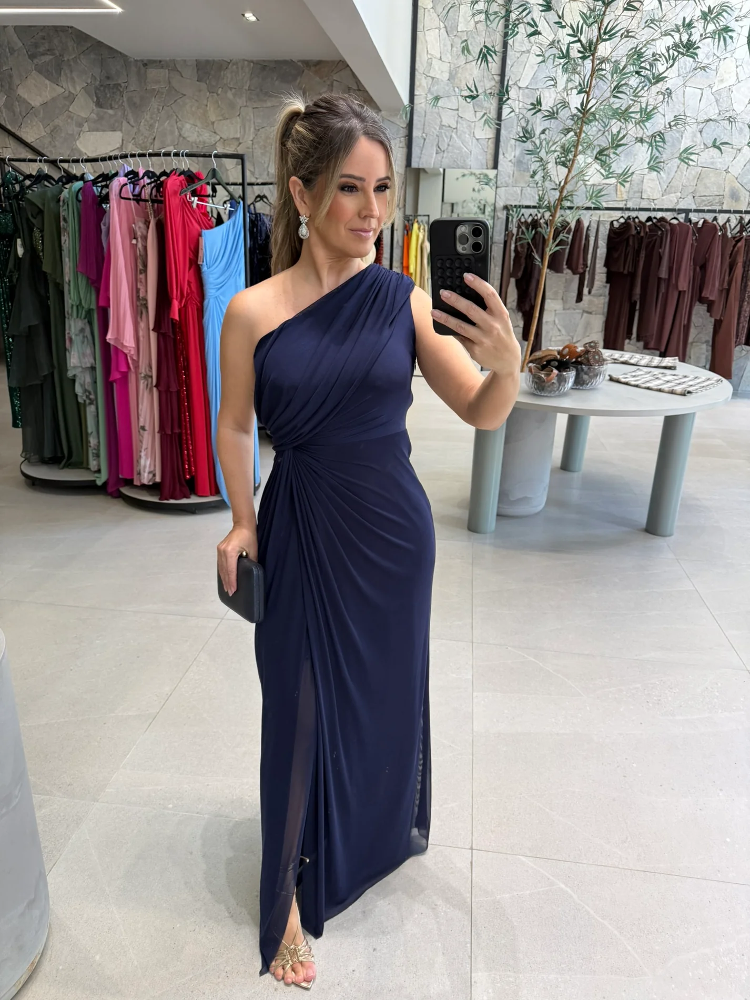

Onde vou usar?
Considere o momento, o clima e o conforto de que você precisa.
Consultoria de imagem · FSI Studio
Escolha peças que acompanhem sua rotina, conversem com o que você já tem e expressem seu jeito.

IntençãoComece pela vida que você leva.
VersatilidadePrefira escolhas que conversam entre si.
IdentidadeTendência só entra se fizer sentido para você.
Um roteiro leve
Considere o momento, o clima e o conforto de que você precisa.
Uma peça que conversa com o que você já tem rende mais possibilidades.
Cor, forma e detalhes podem expressar seu jeito sem seguir regras prontas.
Da ideia à descoberta
Explore a loja por categoria e descubra o que combina com o seu momento.
FSI Studio